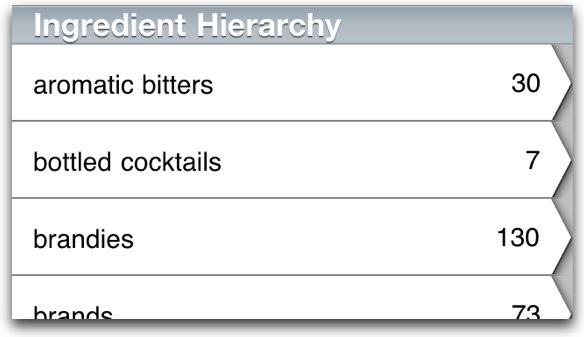
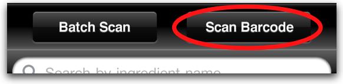
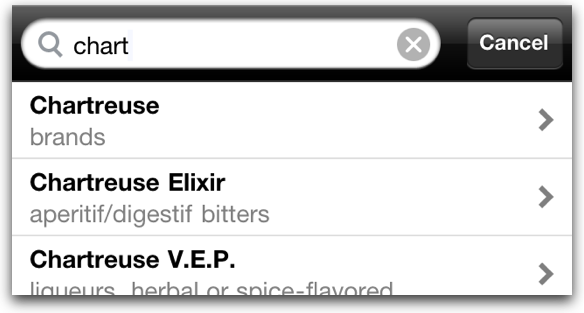
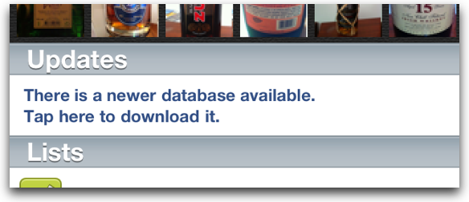

Version 1.0 • Released September 1, 2011
Special introductory price: US$4.99
Please note: we’ve put a lot of work into this app, but it’s still a 1.0 version. While our barcode coverage is probably better than anyone else has got, it’s not perfect. We are still filling in holes and you can help! Every unmatched barcode you scan and submit through My Bar is one nobody will ever worry about again.
“Really good, will become awesome!”—Mattias H.
“The app is really cool. Nice work!”—Ed P.
“I just bought the app. I look forward to playing around with it! This seems like a great idea.”—David M.
“The app is great and I'm looking forward to spending some time scanning my inventory, adding barcodes etc.”—Keith L.
“Thank you for this great app”—Stefan G.
Demo Video
Your Lists
My Bar keeps some handy lists for you.
- Your Inventory list is for what you’ve got.
- Your Shopping list is for what you need to pick up.
- Your Favorites list is stuff you really really like.
- Your Someday list is stuff you’ve been meaning to try.
My Bar even automatically remembers ingredients you’ve had in your inventory in the past. Those are in your Past Inventory list.
You can also create your own custom lists to track whatever you like, such as the ingredients you’ll need for a party, or the inventory at a vacation home, or your recommendations for a buddy.
A living database of bar ingredients
My Bar knows about thousands of bar ingredients. It also knows what those ingredients are and how they relate to each other and organizes them in a hierarchy.
When you see an unfamiliar bottle in the store, My Bar can usually tell you what it is.
My Bar can identify a large and growing number of spirits by scanning the bar code on back. My Bar uses RedLaser virtual bar code scanning—the best available for iOS. Just pull virtually anywhere in the app to expose the scanner trigger. (Camera required for this feature.)
A few letters in the search bar is also usually all it takes to call up any ingredient. Just pull down virtually anywhere in the app to start a new search.
Meanwhile, the database keeps getting better. We are growing My Bar’s database constantly, adding new ingredients, adding more information about the ingredients, adding more photos and bar codes. A tap on the home screen of the app downloads the latest database.
Research & learn
Every entry has at least some kind of basic definition/description that tells you what it is and what other ingredients are similar or related.
Most entries can tell you more, such as where the ingredient comes from, its alcoholic strength, its flavor, and what makes a good substitute.
Many entries have photos. High resolutions ones so you can pinch to zoom in and read the labels. We're adding photos as quickly as we can (and you can help—see below).
Make it better
Feedback is built-in. Help us help you.
If an ingredient you like is missing from the database, tell us and we'll add it. The missing ingredient will show up in the next database update. It’s that simple.
If you have an ingredient that has no photo, snap a picture of it with the camera, submit it through the app and everyone else will benefit. A no brainer.
If you find a bar code that isn’t working for an ingredient, look it up through search, scan the barcode with the camera through the app and submit it. It’ll go in the next update and work for everybody. Easy.

{kind=link}
{kind=link}
{kind=link}
{kind=link}